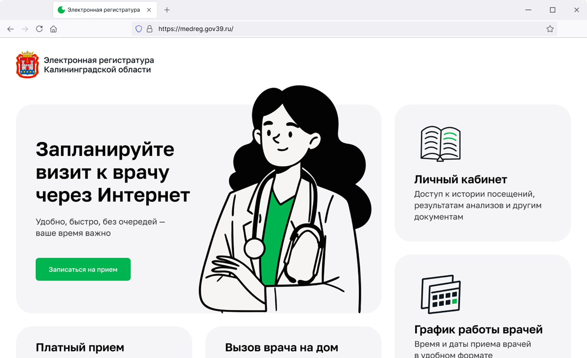
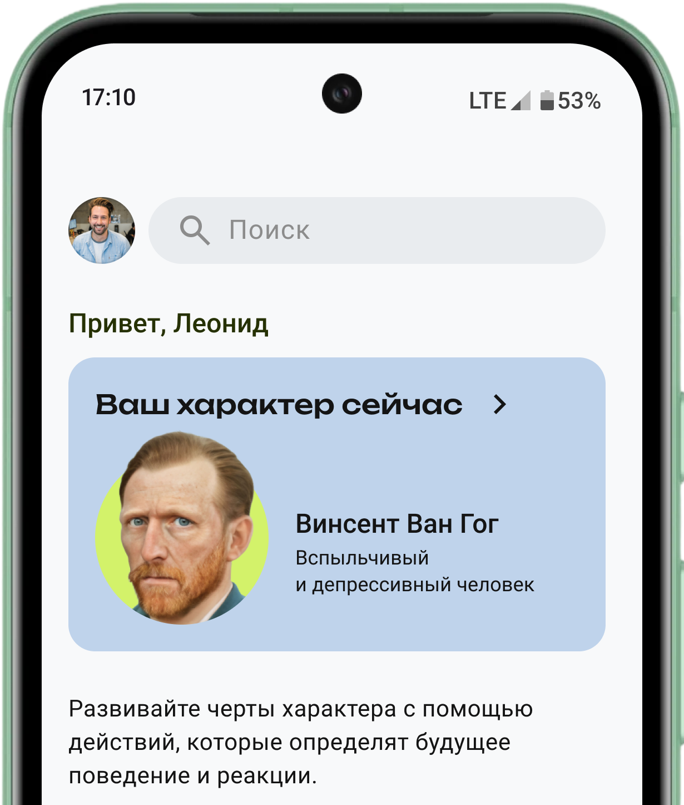

Андрей Ласточкин
Телеграм
Превращаю сложные процессы в понятный и удобный интерфейс, учитывая цели бизнеса и потребности пользователей
Региональный сервис для записи к врачу


Приложение для анализа личности
Боевой UI-kit со спецификациями